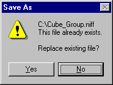

Following are the operating procedures for NIFF Editor.
There are two ways to read a NIFF file:
Please note that using the drag and drop function to open a file in NIFF Editor when a NIFF file is already open, will result in the open file being discarded.
The current version of NIFF Editor can read NIFF 1.0 and NIFF 2.0 files.
Use the following Drag & Drop procedure to paste links between nodes with NIFF Editor.
Use the commands from the [Edit] menu or from the pop-up menu to Cut, Copy, Paste and Delete nodes.
From the [File] menu, choose [Properties] to view the node name and flag information of the currently selected node. The same information can be viewed by moving the mouse above a desired node, clicking the right button to display the pop-up menu, and then selecting the [Properties] command. By displaying the properties in this way you can manipulate the flags for each node.
The displayed properties will differ depending on the node selected. Use the index below to view the Properties Summary and details about the properties of each node.
After pasting node links and changing flags, select the [Convert] command from the [Tools] menu to convert the results into a display list. When this menu item is selected the NIFFCONV.BAT batch file is activated and the data is converted. Please note that prior to using this command you must first specify the Convert settings. From the [Tools] menu choose [Options], then choose Convert to specify the settings.
After pasting node links and changing flags, select the Preview command from the Tools menu to preview the results. When this menu item is selected the currently set NIFF file is output, converted, and after make and makemask are performed, the file is sent to IS-VIEWER64 so the results can be viewed on Nintendo64 system. Please note that prior to using this command you must first specify the Preview settings. From the Tools menu choose Options, then choose Preview to specify the settings.
To Quick Preview a NIFF file, choose [Quick Preview] from the [Tools] menu or click the [Quick Preview] button on the toolbar. n64prev Previewer converts the NIFF file and compiles it using exeGCC, then loads the resulting file into IS-Viewer64 for previewing. With Quick Previewer, however, files can be instantly previewed because they do not need to be compiled by exeGCC first. To use Quick Previewer you may need to perform the right setup or change the Quick Previewer options through [Options] in the [Tools] menu.
Execute nvfconv.bat to convert the NIFF file to an NVF file. Convert2 can only be used to convert NIFF 2.0 files.
Execute nvfprev.bat to preview the NIFF file with IS-VIEWER64. When previewing NIFF 2.0 files, please use Preview 2.
Selecting [Save] from the [File] menu overwrites the open file to a file with the same name. Selecting [Save As] from the [File] menu opens the File dialog box enabling you to select a filename from the list provided, or to enter a new name and/or location for the file to be saved. If the specified file name is the same as the name of the open file, a message is displayed letting you know that the file already exists.

You are then asked whether it is [OK] to replace the existing file.